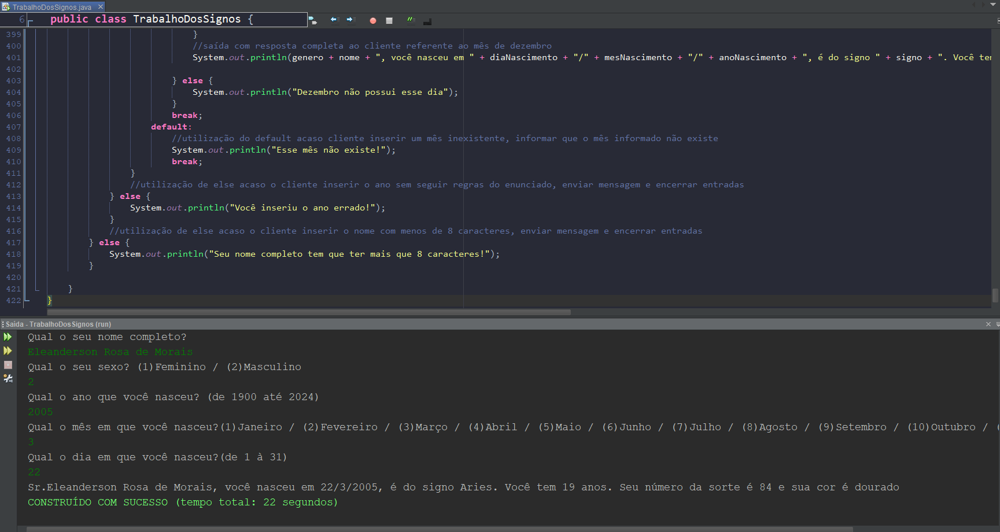
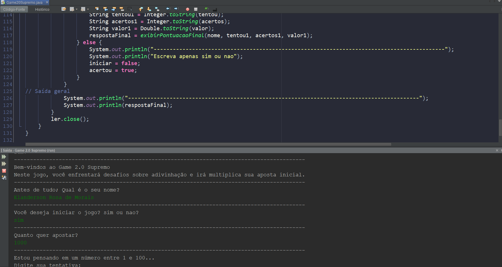
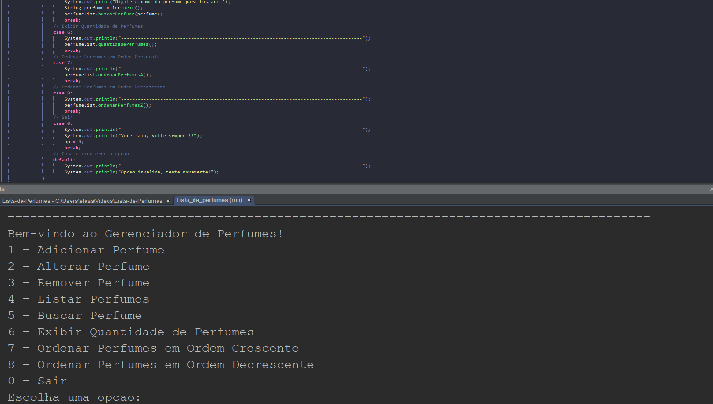
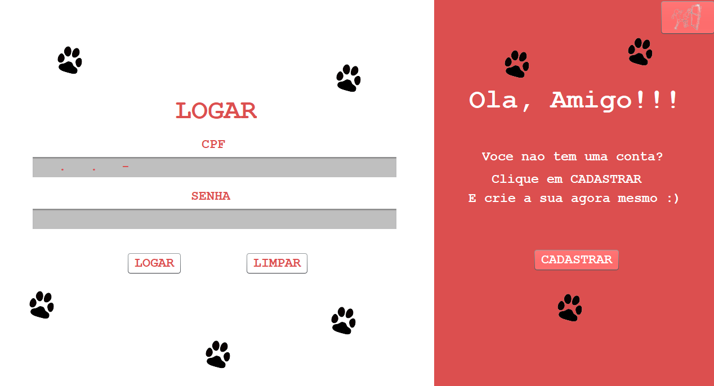
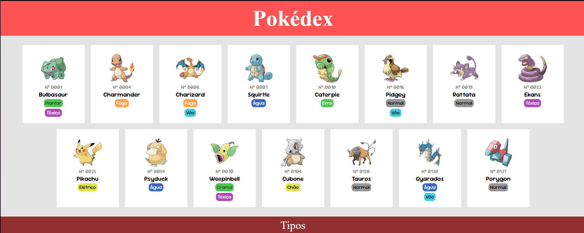

Olá! Meu nome é Eleanderson Rosa de Morais e atualmente resido em Vargas, Sapucaia do Sul - RS. Desde os cinco anos, a informática tem sido uma grande paixão e, a cada dia, meu interesse por essa área só cresce, com um foco especial na programação. Ao longo da minha trajetória, adquiri experiência em tecnologias como Java, JavaScript, HTML, CSS e em diversos softwares, com destaque para as ferramentas da Adobe. Estou sempre em busca de novos desafios e aprendizados para continuar expandindo minhas habilidades e conhecimentos.
Objetivos
Meu objetivo é ingressar na área de Tecnologia da Informação, com o intuito de expandir constantemente meus conhecimentos e experiências. Busco crescer não apenas financeiramente, mas também de forma pessoal, criando uma base sólida e equilibrada para a minha vida. Além disso, desejo contribuir ativamente para o progresso da empresa em que eu venha a trabalhar, ajudando na melhoria contínua de seus sistemas e evoluindo junto com a equipe.
Formação
ENCCEJA 2023
Data: Agosto de 2023
Site: ENCCEJA
Sobre: Concluí o ensino médio por meio da prova do
ENCCEJA. Antes disso, cursei, mas não finalizei, o ensino médio integrado ao curso de Plásticos no
IFSUL - Campus Sapucaia do Sul.
Cursos
Cursando técnico em informática
Tempo: 1400 horas
Data: Agosto de 2024 até Dezembro de 2025
Localização: Colégio Ulbra São Lucas
Sobre: No curso técnico em informática, estou adquirindo conhecimentos abrangentes em áreas como
tecnologia da informação, design, montagem de computadores e, principalmente, programação. Aprendi a
desenvolver sites, criar códigos, gerenciar bancos de dados e compreender a lógica por trás das
tecnologias utilizadas, além de me familiarizar com suas nomenclaturas. O curso também proporciona
uma visão prática do ambiente de trabalho no setor de TI, preparando os alunos de forma profissional
para o mercado de tecnologia.
Projetos
Identificador de signos
Este programa em Java permite que o usuário insira algumas informações e,
diretamente no console, exibe seu signo e outras curiosidades.
Interessado em testar? Clique na imagem para acessar o projeto no GitHub!
Criado por: Eleanderson Rosa de Morais e Bruno Model Martinho.

Game de apostas e adivinhação
Este programa em Java permite que o usuário insira um valor de aposta e tente adivinhar um número
aleatório até acertá-lo. No final, o console exibe o número de tentativas da rodada e pergunta se
deseja continuar.
Ficou interessado em testar? Clique na imagem para acessar o projeto no GitHub!
Criado por: Eleanderson Rosa de Morais.

Lista de perfumes
Este programa seria como se fosse um gerenciador de perfumes, onde o usuário irá conseguir
interagir com a interface no terminal, onde será usado ArrayList, para armazenar
temporariamente as informações herdadas que o usuário irá inserir,
como adicionar, editar ou remover os perfumes, além de outras funções.
Ficou interessado em testar? Clique na imagem para acessar o projeto no GitHub!
Criado por: Eleanderson Rosa de Morais.

Pet Shop
Este programa consiste em uma interface interativa, onde será conectada com um banco de dados
individual no localhost utilizando o XAMPP, onde será um petshop que você irá conseguir cadastrar
e logar seu usuário, além de conseguir adicionar seu pet, 99% funcional sem erros, com sistema
de login, verificador de CPF, e etc... Mas requer adicionar manualmente as tabelas e as suas
informações correspondentes a que está nos códigos.
Ficou interessado em testar? Clique na imagem para acessar o projeto no GitHub!
Criado por: Eleanderson Rosa de Morais.

Pokedex
Simplesmente uma página web de uma pokedex usando HTML e CSS, simples, interativa e com
hyperlinks.
Ficou interessado em testar? Clique na imagem para acessar o projeto no GitHub!
Criado por: Eleanderson Rosa de Morais.

Habilidades
Java
Tenho conhecimento básico em Java, com a capacidade de desenvolver programas simples para resolver problemas do cotidiano.
JavaScript/HTML/CSS
Estou em processo de aprendizado em HTML, CSS e JavaScript. Até o momento, consigo criar sites com um design atrativo e boas interações, utilizando funções JavaScript para melhorar a experiência do usuário.
DataBase
Meu conhecimento sobre bancos de dados é básico. Já utilizei essa tecnologia em alguns projetos, e entendo bem a lógica por trás dos processos de manipulação de dados.
Pacote Adobe
Tenho conhecimento intermediário em ferramentas da Adobe, como Premiere, Photoshop, After Effects e Illustrator. Sou capaz de criar logotipos, editar vídeos e fotos, além de desenvolver outros tipos de conteúdo visual.
Outros
Tenho experiência na criação de plantas e projetos, assim como em modelagem 3D, utilizando softwares como AutoCAD e SolidWorks.